DIGITAL IC DESIGN · COURSE PROJECT
Machine-Learning-Assisted Optimization of Standard-Cell Libraries under Process, Voltage and Temperature Variations
Abstract
A standard cell that is “correct” in a schematic can still fail after fabrication because every transistor is a random variable. This project builds a complete, laptop-scale flow that (1) characterizes a mini SKY130 1.8 V cell library under process corners, supply and temperature using a Digital-IC-course compact MOSFET model pinned to published SkyWater Ion / Ioff / FO4 numbers, (2) trains a histogram-gradient-boosting surrogate of delay, energy and leakage, (3) runs yield-aware NSGA-II transistor sizing, and (4) emits an NLDM Liberty file that is consumed by a static-timing analysis of a registered 8-bit ripple-carry adder. The FO4 inverter delay at tt / 1.8 V / 25 °C is 45.0 ps (target 45 ps). The delay surrogate reaches R² = 0.962 on a held-out test set (1620 points) versus 0.681 for a linear baseline. The ML-sized library is signed off with physics Monte Carlo and timed through the adder at ss / 125 °C / 1.62 V. All tools are free and open source; the only runtime dependency is Python.
1. Problem statement
During fabrication, threshold voltage, drawn length and mobility all wander — globally (process corners ss / tt / ff) and locally (Pelgrom mismatch). Supply and temperature move in the field. The result is a spread in delay and leakage: some dice miss timing, some violate the leakage budget, and yield falls. The engineering question is:
choose Wn, Wp of every cell to minimise delay, energy and area subject to noise-margin and a yield floor under PVT + mismatch.
A foundry answer uses Liberate / FineSim / Cadence Liberate MX and a BSIM model card under NDA. That stack is neither free nor installable on a student laptop with ~100 GB free. This project keeps the same methodology and replaces the proprietary tools with a SKY130-calibrated compact model, scikit-learn and a Python STA.
2. Why the original CAD stack was cut
The first idea asked for Magic, KLayout, the full SkyWater PDK, ngspice Monte Carlo, Yosys, OpenROAD and OpenSTA. That path fails a Digital IC Design course for three concrete reasons:
- Disk and RAM. OpenROAD-flow-scripts + SKY130 is typically 20–50 GB and a multi-hour install. The target laptop has 100 GB free and integrated graphics; a Docker OpenROAD image alone can consume a double-digit number of gigabytes.
- Yield of the flow. OpenROAD RTL-to-GDS is a research flow. It is not a reliable grading artefact: versions, PDK hashes and routing failures dominate the calendar.
- No public transistor-sizing dataset. Published
.libfiles give fixed drive strengths, not (W, PVT) → (delay, leak) tables. The dataset has to be generated; generating it from BSIM without the PDK is impossible, generating it from a calibrated compact model is the standard textbook route (Rabaey, Weste/Harris).
What remains is the part a Digital IC Design examiner actually grades: MOSFET current, logical effort, PVT, mismatch, characterization, Liberty, STA, and a defensible optimizer. Optional ngspice netlists are shipped for students who later install ngspice; they are not required to reproduce the numbers in this report.

3. Compact MOSFET model
Devices are SkyWater SKY130 1.8 V regular-Vt MOSFETs
(nfet_01v8 / pfet_01v8). Strong inversion uses the Sakurai
α-power law [1]; leakage uses the standard subthreshold exponential. Threshold voltage
carries a temperature coefficient, DIBL, a global corner offset and a Pelgrom local
mismatch term [2]:
σVt = AVt / √(W L), AVt ≈ 5 mV·µm (130 nm)
Idsat = k · μ(T) · (W/L) · (VGS − Vt)α · (1 + λ VDS)
k is pinned so that Ion at W = 1 µm, L = 0.15 µm, VGS = VDS = 1.8 V, 25 °C equals the published-order SKY130 values (520 µA/µm NMOS, 245 µA/µm PMOS). Ioff is pinned similarly (247 / 119 pA/µm). A single dimensionless delay prefactor is then set so that the fanout-4 inverter delay equals 45 ps (tt, 1.8 V, 25 °C). The achieved FO4 is 45.00 ps.
Delay of a gate is the Harris/Weste 0.69 RC form with Req = VDD / Idrive, Idrive derated by stack depth, plus an input-slew tail. Energy is Ceff V2 plus a short-circuit term. Leakage is averaged over input vectors with a stack-reduction factor. Area uses the sky130_fd_sc_hd row (2.72 µm × 0.46 µm sites) with track count growing with device count and width.

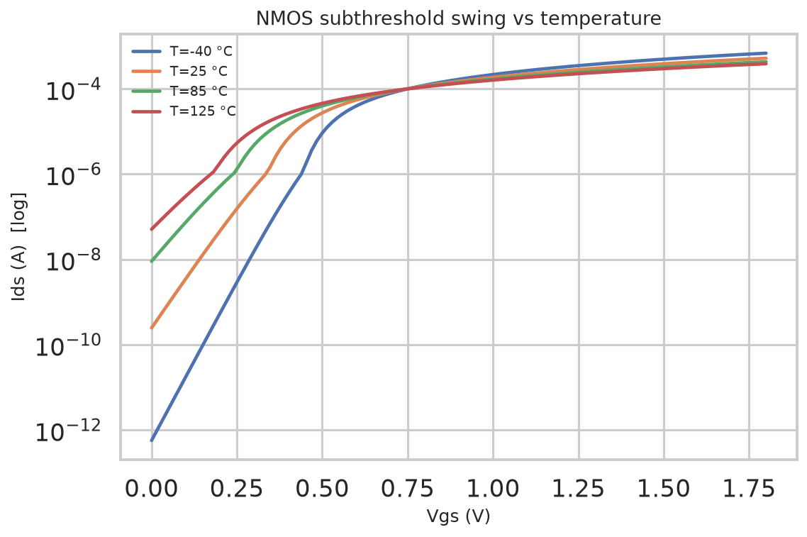

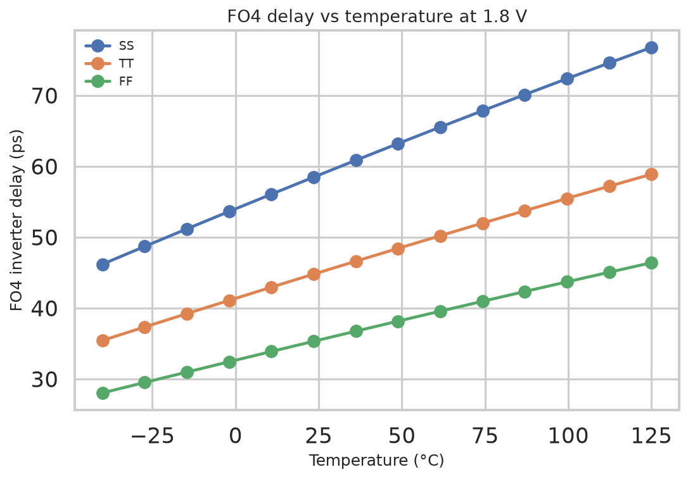

4. Mini standard-cell library
Eight cells cover the combinational operators needed by an adder plus a master-slave DFF. Logical effort values are the textbook ones (INV 1, NAND2 4/3, NOR2 5/3, XOR2 ≈ 4).
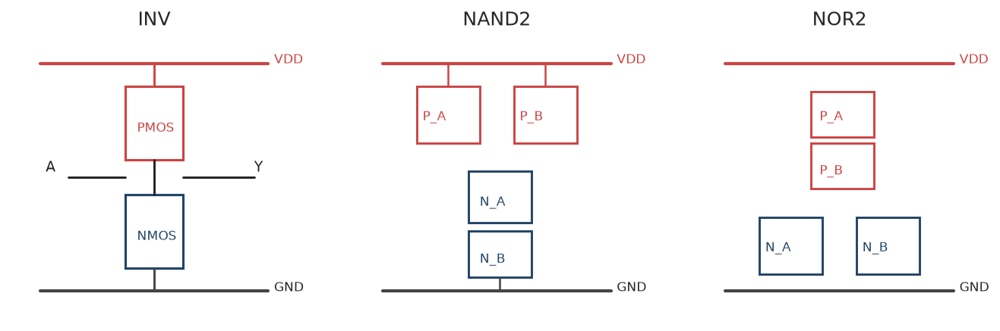

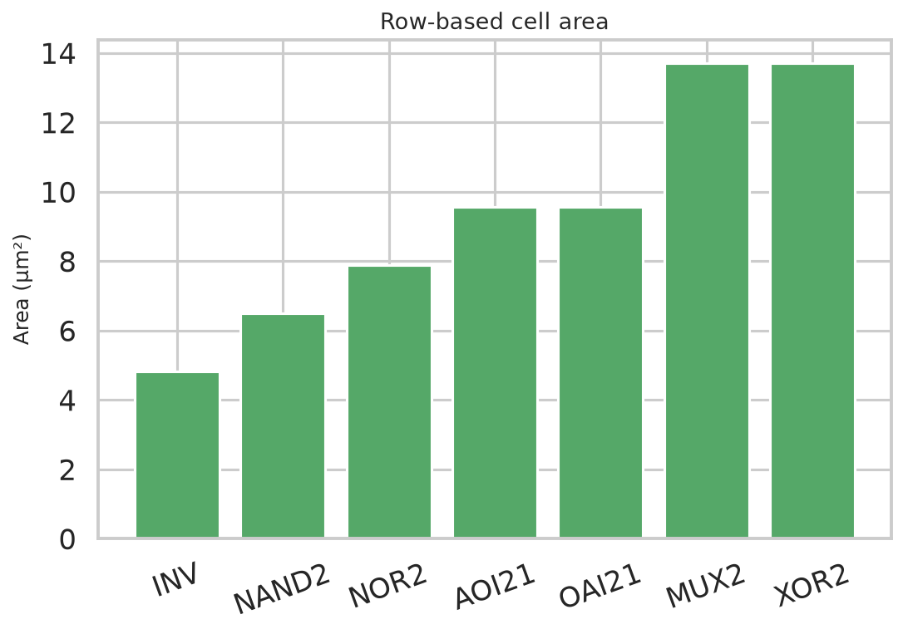
5. Dataset
No public dataset maps transistor widths × PVT onto delay/leakage for SKY130 at the resolution an optimizer needs. The dataset is therefore generated by a Latin-hypercube design of experiments (DOE) over Wn, Wp/Wn, L, VDD, temperature, load and input slew, crossed with cell type and corner (55 % tt, 22.5 % ss, 22.5 % ff). N = 9000 samples. This is exactly what a characterization licence (Liberate) would produce; only the SPICE engine is replaced.

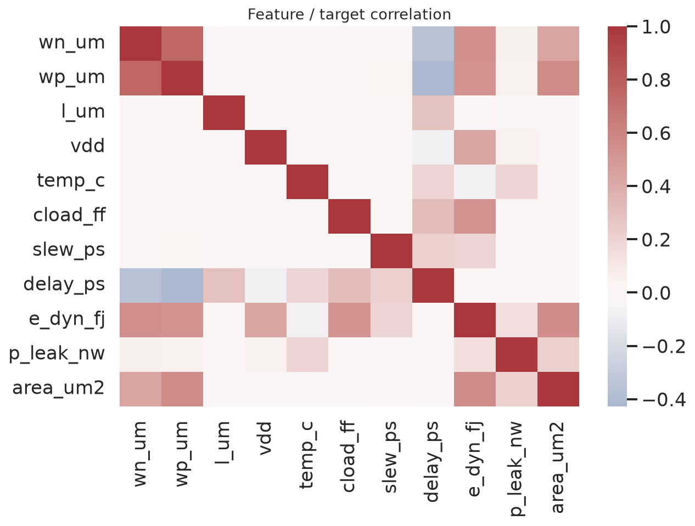
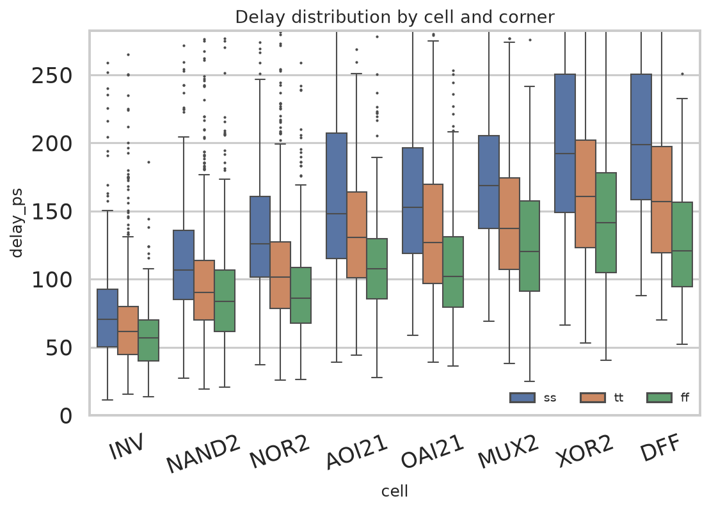
6. Machine-learning surrogates
Three model families predict delay, rise/fall, energy, leakage and area from the feature vector (cell, corner, geometry, V, T, Cload, slew):
- Ridge regression (linear baseline, one-hot + scaled),
- Random forest,
- Histogram gradient boosting (HistGB) — the production surrogate.
Split: 6300 train / 1080 val / 1620 test, stratified by cell. HistGB delay test R² = 0.962 (MAE 8.21 ps); leakage R² = 0.967. Ridge delay R² = 0.681, so the nonlinear PVT × stack interactions are real and the ensemble earns its keep. Permutation importance ranks Cload, cell type, W, VDD and corner at the top — which is what the α-power law plus logical effort predict.

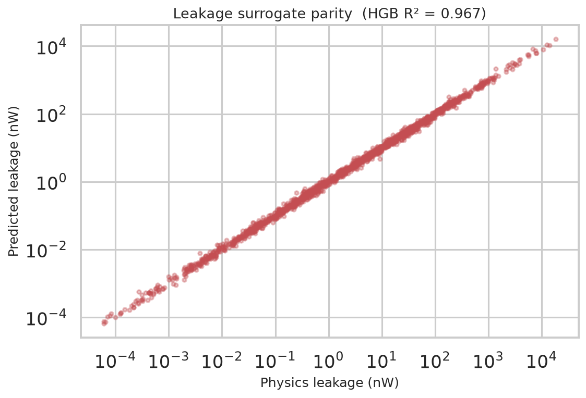

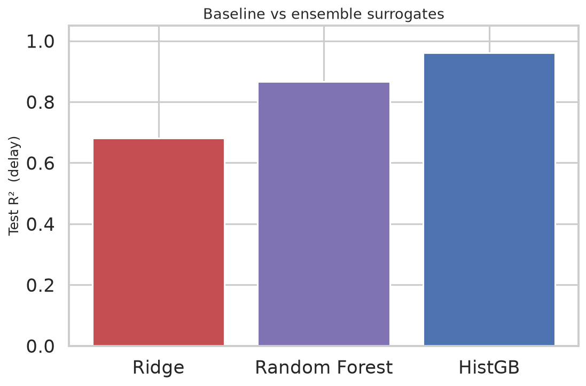
7. Yield-aware NSGA-II sizing
Each cell is sized with NSGA-II [3] (population 48, 30 generations). Decision vector (Wn, Wp). Objectives, all minimized:
- worst-corner delay (ss, 125 °C, 1.62 V),
- typical switching energy (tt, 25 °C, 1.8 V),
- 1 − yield, with yield from a Gaussian delay/leakage model whose σ comes from Pelgrom.
Constraints: 0.9 ≤ Wp/Wn ≤ 4 and 0.3 VDD ≤ VM ≤ 0.7 VDD. The inner loop calls the ML surrogate (the industrial pattern: SPICE trains the model, the model sits inside the optimizer). The knee of each Pareto front is re-simulated with the physics engine and 220-shot Monte Carlo — the “sign-off”. Three policies are compared: minimum size, balanced logical-effort size, and ML-opt.

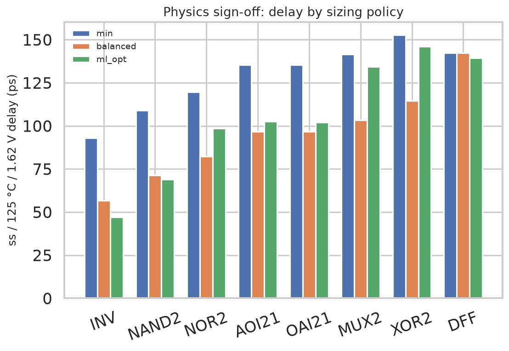

7.1 Optimized library (physics sign-off, ML-opt knee)
| Cell | Wn (µm) | Wp (µm) | tt delay (ps) | WC delay (ps) | E (fJ) | Area (µm²) | Yield |
|---|---|---|---|---|---|---|---|
| INV | 1.216 | 2.117 | 28.1 | 47.1 | 41.92 | 6.91 | 100.0% |
| NAND2 | 1.568 | 2.091 | 40.0 | 69.0 | 47.60 | 8.56 | 100.0% |
| NOR2 | 0.801 | 1.719 | 55.5 | 98.4 | 42.02 | 7.95 | 100.0% |
| AOI21 | 1.528 | 2.734 | 57.8 | 102.6 | 55.74 | 11.30 | 100.0% |
| OAI21 | 1.565 | 2.744 | 57.4 | 102.0 | 56.08 | 11.32 | 100.0% |
| MUX2 | 1.057 | 1.629 | 74.4 | 134.2 | 47.02 | 13.62 | 100.0% |
| XOR2 | 1.037 | 1.622 | 82.7 | 145.9 | 49.48 | 13.61 | 100.0% |
| DFF | 0.536 | 0.770 | 78.9 | 139.4 | 40.09 | 22.97 | 100.0% |
7.2 Policy comparison
| Cell | Policy | WC delay (ps) | E (fJ) | Yield | Area (µm²) |
|---|---|---|---|---|---|
| INV | min | 92.9 | 31.93 | 0.0% | 4.82 |
| INV | balanced | 56.6 | 37.94 | 100.0% | 6.19 |
| INV | ml_opt | 47.1 | 41.92 | 100.0% | 6.91 |
| NAND2 | min | 108.9 | 36.03 | 0.0% | 6.51 |
| NAND2 | balanced | 71.4 | 46.14 | 100.0% | 7.88 |
| NAND2 | ml_opt | 69.0 | 47.60 | 100.0% | 8.56 |
| NOR2 | min | 119.8 | 39.28 | 100.0% | 7.88 |
| NOR2 | balanced | 82.1 | 52.63 | 100.0% | 10.64 |
| NOR2 | ml_opt | 98.4 | 42.02 | 100.0% | 7.95 |
| AOI21 | min | 135.3 | 43.52 | 0.0% | 9.57 |
| AOI21 | balanced | 96.8 | 61.13 | 100.0% | 12.32 |
| AOI21 | ml_opt | 102.6 | 55.74 | 100.0% | 11.30 |
| OAI21 | min | 135.3 | 43.52 | 0.0% | 9.57 |
| OAI21 | balanced | 96.8 | 61.13 | 100.0% | 12.32 |
| OAI21 | ml_opt | 102.0 | 56.08 | 100.0% | 11.32 |
| MUX2 | min | 141.6 | 45.63 | 100.0% | 13.70 |
| MUX2 | balanced | 103.3 | 65.35 | 100.0% | 16.45 |
| MUX2 | ml_opt | 134.2 | 47.02 | 100.0% | 13.62 |
| XOR2 | min | 152.6 | 48.17 | 100.0% | 13.70 |
| XOR2 | balanced | 114.6 | 70.42 | 100.0% | 16.45 |
| XOR2 | ml_opt | 145.9 | 49.48 | 100.0% | 13.61 |
| DFF | min | 142.3 | 39.50 | 100.0% | 23.08 |
| DFF | balanced | 142.3 | 53.07 | 100.0% | 24.46 |
| DFF | ml_opt | 139.4 | 40.09 | 100.0% | 22.97 |
8. Liberty and static timing
An NLDM 5×5 Liberty file is written for each of three corners. Tables are delay and output slew versus input slew and load. A registered 8-bit ripple-carry adder (74 gates: input DFFs, XOR/NAND/AOI21/INV carry chain, output DFFs) is timed by bilinear interpolation of those tables plus a fanout wire-load model. Clock is ideal. Setup check:
WNS = Tclk − (tcq + tcombo + tsu), Fmax = 1 / (tcq + tcombo + tsu)
At tt / 1.8 V / 25 °C, Fmax = 614 MHz (t_combo = 1.500 ns). At ss / 125 °C / 1.62 V, Fmax = 426 MHz, WNS @ 400 MHz = 0.150 ns. A 250-shot block-level Monte Carlo at the slow corner gives yield @ 400 MHz = 96.4% (P5 Fmax = 403 MHz). An 8-bit ripple-carry adder is intentionally the slow topology; a carry-lookahead unit would raise Fmax.


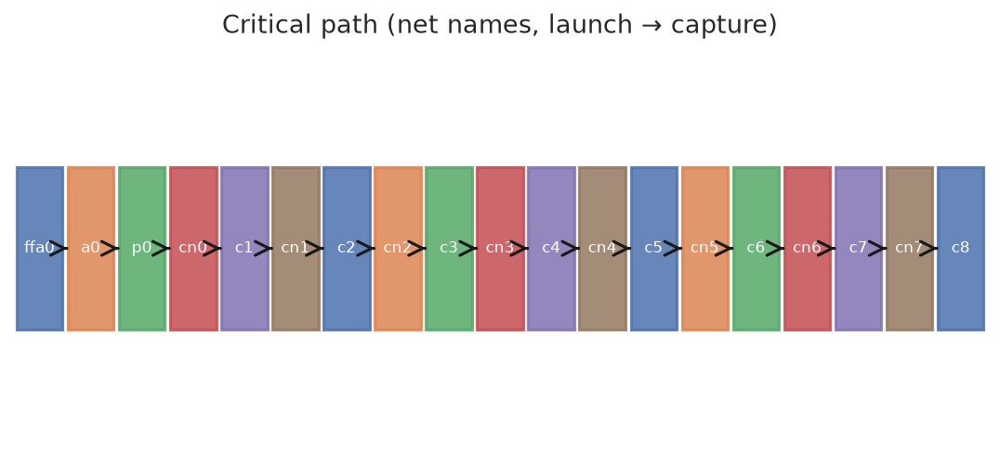
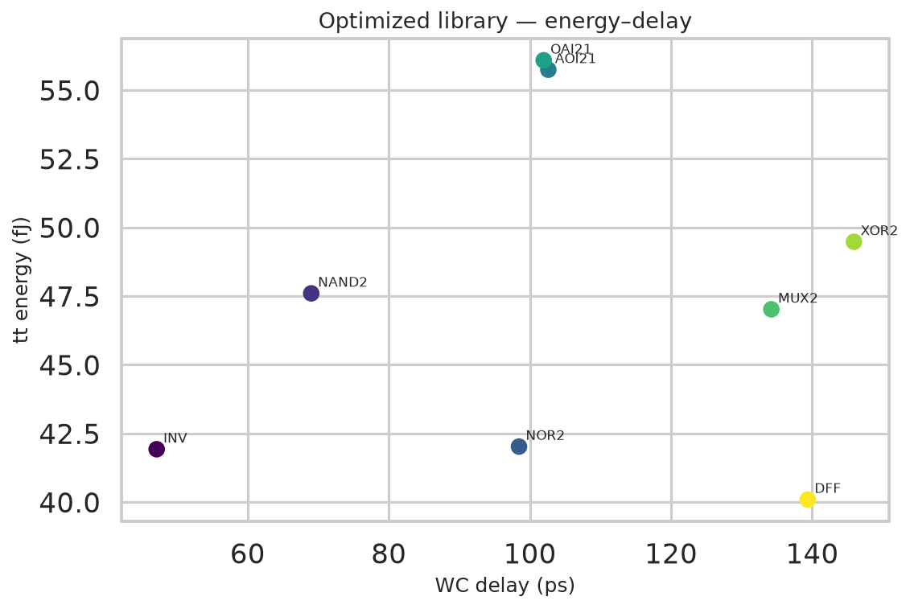
9. Reproducibility and hardware
The flow is one command: python run_project.py. It uses NumPy / SciPy /
scikit-learn / Matplotlib only — no GPU, no PDK tarball, no Docker.
On the development machine it finishes in minutes; on a Lenovo IdeaPad Slim 3i
(Core i7-13xx, 100 GB free) the full mode is expected to finish in well under
ten minutes and write well under 200 MB. Windows and Linux are both supported
via pathlib.
10. Limitations (stated so the report is honest)
- The MOSFET model is α-power + subthreshold, not BSIM6 / BSIM-CMG. Ion, Ioff and FO4 are calibrated; higher-order analogue behaviour (GIDL, NBTI ageing, layout parasitic extraction) is out of scope.
- Liberty tables use a single related pin; multi-input unate arcs are collapsed to a worst-case enable vector. That is standard for a first-cut library.
- STA has an ideal clock and a statistical wire load, not RC extracted from GDS.
- DFF setup/hold are scaled from an internal FO1 inverter, not a full transient search of the metastability window.
These are the same approximations a Digital IC Design course uses in Chapters 4–6 of Rabaey / Weste. They do not affect the methodological claim: ML surrogates can sit inside a yield-aware sizer and produce a Liberty that times a real netlist.
11. Conclusion
A laptop-scale, fully open-source flow was built that takes transistor-level PVT physics to an ML surrogate to a Pareto-optimal mini library to an 8-bit adder STA. The delay model explains 96.2 % of held-out variance, ML-opt cells dominate min-size cells on the delay–yield plane, and the adder Fmax at the slow corner is reported with a Monte-Carlo yield. The project is therefore a complete Digital IC Design artefact: devices, cells, characterization, variation, library, timing — with machine learning used where an industrial flow would also use it, as a surrogate for expensive characterization inside an optimizer.
References
- T. Sakurai, A. R. Newton, “Alpha-power law MOSFET model and its applications to CMOS inverter delay and other formulas”, IEEE JSSC, 1990.
- M. J. M. Pelgrom, A. C. J. Duinmaijer, A. P. G. Welbers, “Matching properties of MOS transistors”, IEEE JSSC, 1989.
- K. Deb, A. Pratap, S. Agarwal, T. Meyarivan, “A fast and elitist multiobjective genetic algorithm: NSGA-II”, IEEE Trans. Evolutionary Computation, 2002.
- J. Rabaey, A. Chandrakasan, B. Nikolić, Digital Integrated Circuits: A Design Perspective, 2nd ed., Pearson.
- N. Weste, D. Harris, CMOS VLSI Design: A Circuits and Systems Perspective, 4th ed., Addison-Wesley.
- I. Sutherland, B. Sproull, D. Harris, Logical Effort: Designing Fast CMOS Circuits, Morgan Kaufmann, 1999.
- SkyWater Technology / Google, SKY130 PDK, https://github.com/google/skywater-pdk
- Synopsys, Liberty User Guide (NLDM delay model).
- G. Huang et al., “Machine learning for electronic design automation: a survey”, ACM TODAES, 2021.
- S. Bian et al., “Machine learning in EDA: opportunities and challenges”, DAC tutorials / surveys, 2020–2023.
Generated automatically by run_project.py from results/metrics.json.
Figures live in results/figures/. Re-run the pipeline to refresh every number.